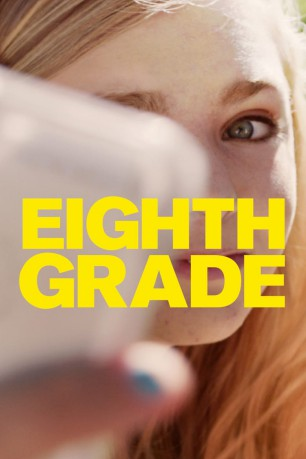
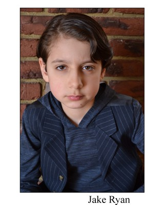
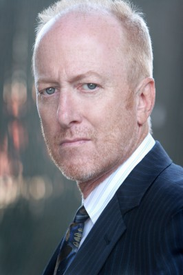

#11447 Eighth Grade
 
 IMDB-Wertung: 7.5 / 10
IMDB-Wertung: 7.5 / 10  Tomatometer: 99
Tomatometer: 99  Metascore: 89
Metascore: 89 
In his feature film directorial debut, comedian Bo Burnham deftly encapsulates the awkwardness, angst, self-loathing and reinvention that a teenage girl goes through on the cusp of high school. Given that the 27-year-old stand-up comic achieved fame as a teenager himself through YouTube by riffing on his insecurities, he is uniquely capable as the film's writer and director to tell the story of Kayla, an anxious girl navigating the final days of her eighth grade year, despite creating a protagonist w female instead of male. Like Burnham did more than a decade ago, 13-year-old Kayla turns to YouTube to express herself, where she makes advice blogs in which she pretends to have it all together. In reality, Kayla is sullen and silent around her single father and her peers at school, carrying out most of her interactions with her classmates on Instagram and Twitter. Her YouTube videos are a clever narrative tool that provide insight into her inner hopes and dreams, much like an ...
Jahr: 2018
Dauer: 94 Minuten
FSK: 12
Land: USA Studio: A24Tonspuren: - , - , - , - , - ,
Untertitel: Deutsch, Englisch,
Auflösung: 1080p (1920x1040) Größe: 7157 MB
Genre: Drama, Komödie
Regisseur: Bo Burnham
Drehbuch: Bo Burnham
Soundtrack: Anna Meredith
Darsteller:
 Elsie Fisher als Kayla Day
Elsie Fisher als Kayla Day Josh Hamilton als Mark Day
Josh Hamilton als Mark Day- Emily Robinson als Olivia
-  Jake Ryan als Gabe
- Daniel Zolghadri als Riley
- Fred Hechinger als Trevor
- Imani Lewis als Aniyah
- Luke Prael als Aiden
- Catherine Oliviere als Kennedy
- Missy Yager als Mrs. Graves
- Greg Crowe als Mr. McDaniel
- Thomas John O'Reilly als Edmund
-  Frank Deal als Officer Todd
- J. Tucker Smith als Mr. Graves
- Tiffany Grossfeld als Babs
- David Shih als Chaperone
 Natalie Carter als Mrs. Rosh
Natalie Carter als Mrs. Rosh- Kevin R. Free als Mr. Dankert
- Deborah Unger als Mrs. Nolan
- William Alexander Wunsch als Brave Boy
- Marguerite Stimpson als Puberty Video Instructor
- Dan Chen als School Photographer (uncredited)
- Castor Feinberg als Middle School Student (uncredited)
- Courtney Gonzalez als High School Student (uncredited)
- Jalesia Martinez als High School Student (uncredited)
- Dina Pearlman als Gina (uncredited)
 Tom Stratford als Middle School Teacher (uncredited)
Tom Stratford als Middle School Teacher (uncredited)- Kathryn Zimmer als Middle School Student - Best Personality (uncredited)
- Nora Mullins als Steph
- Gerald W. Jones als Tyler
- Shacha Temirov als Mason
- Trinity Goscinsky-Lynch als Dylan
- Keith Maurice Davis als High School Boy
- Phoebe Amirault als Middle School Student (uncredited)
- Veronica Bikowicz als Middle School Student (uncredited)
- Shira Fisler als Pool Girl (uncredited)
- Andrew Geher als Crazy Dancing Boy (uncredited)
- Gerald W. Jones III als (uncredited)
- Luke Mulligan als Jed Goodwin (uncredited)
- Kaileen Quinones als Middle School Student (uncredited)
- Shane Stackpole als Drummer Band Member (uncredited)
Datei: X:\2018(A-F)\Eighth Grade (2018, FSK12, 1920x1040).mkv seit 06.07.2019
Festplatte: HD 2017(A-Z)-2018(A-F)
 Es gibt insgesamt 151 Filme in der Gruppe '2018(A-F)'
Es gibt insgesamt 151 Filme in der Gruppe '2018(A-F)'